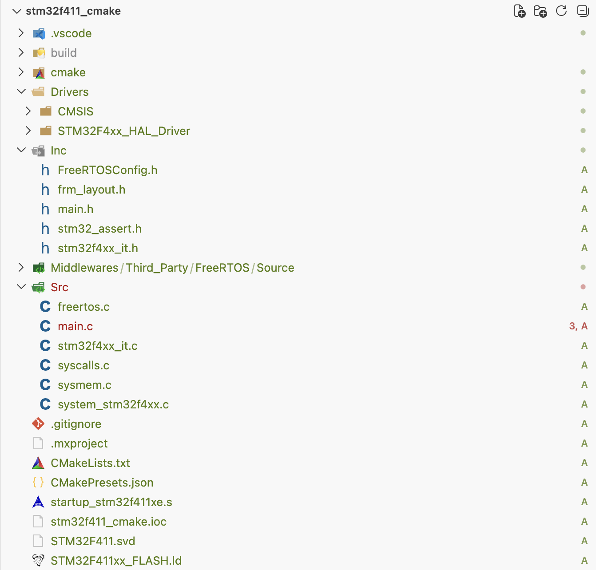

0. 背景 之前笔者讲到了仅用 VSCode 编辑器及 ARM 工具链，配合 J-Link 调试器进行 STM32F411 开发的方法，其中 STM32F411 工程是用 gcc + cmake 来进行构建和编译的。但是，笔者对于其中的预处理 → 编译 → 汇编 → 链接内容掌握的并不全面和深入 （见参考 10） ，故在本篇博客中，基于 之前创建的工程 ，对其中涉及的内容进行学习、实践和剖析。
1. 从编译 hello_world.c 到单文件 ARM 交叉编译 本篇从新建一个 hello_world.c 文件（暂时不用到之前创建的工程），填充学习 C 语言时的 hello world 例子，使用 GCC 进行编译作为引子：
1 2 3 4 5 6 7 #include <stdio.h> int main (void ) { printf ("hello world!" ); return 0 ; }
1 gcc -c hello_world.c -o hello_world.o
这条命令由四部分组成：gcc 是程序名，即编译器；-c 是选项，告诉编译器只编译，不链接；hello_world.c 是输入文件；-o hello_world.o 指定输出文件名。所有 GCC 命令都遵循这个结构：程序名 + 选项 + 输入 + 输出，复杂的命令只是选项变多了。该命令执行后，会在目录下输出 hello_world.o 文件。
上述就是笔者刚开始学习 C 语言并完成第一次编译 .c 文件的场景，那么由此及彼，现在试着用 GCC 直接去编译之前所创建工程中的 Src/main.c。

* 之前所创建工程的目录结构
但此处由于是为编译运行于 ARM 设备（STM32F411）上的程序，故需使用 ARM 交叉编译工具链 arm-none-eabi-gcc （见参考 7） 而非 gcc。直接执行：
1 arm-none-eabi-gcc -c Src/main.c -o main.o
其中 arm-none-eabi-：arm 表示目标架构是 ARM，none 表示没有操作系统（裸机），eabi 表示嵌入式应用二进制接口。
执行后，发现 GCC 立刻报错：
1 2 3 4 Src/main.c:20:10: fatal error: main.h: No such file or directory 20 | | ^~~~~~~~ compilation terminated.
这个报错意味着编译器在遇到 #include "main.h" 时，不知道去哪里找这个文件，这是因为编译器默认只在当前目录和系统路径下搜索，而头文件散落在当前工程中的 Inc/、Drivers/、Middlewares/ 等多个目录中。这就需要 -I 选项，为编译器指定额外的搜索路径，也就是当前工程存放头文件的路径：
1 2 3 4 5 6 7 8 arm-none-eabi-gcc -c Src/main.c -o ./tmp/main.o \ -I Inc \ -I Drivers/STM32F4xx_HAL_Driver/Inc \ -I Middlewares/Third_Party/FreeRTOS/Source/include \ -I Middlewares/Third_Party/FreeRTOS/Source/CMSIS_RTOS_V2 \ -I Middlewares/Third_Party/FreeRTOS/Source/portable/GCC/ARM_CM4F \ -I Drivers/CMSIS/Device/ST/STM32F4xx/Include \ -I Drivers/CMSIS/Include
多个 -I 按命令行中出现的顺序依次搜索，找到第一个匹配的就停止。
补上所有 -I 后重试，却发现 GCC 此次出现了更多的报错。
1 2 3 4 5 6 7 8 9 10 11 12 13 14 15 16 17 18 19 20 21 22 23 24 In file included from Drivers/STM32F4xx_HAL_Driver/Inc/stm32f4xx_ll_rcc.h:27, from Inc/main.h:31, from Src/main.c:20: Drivers/CMSIS/Device/ST/STM32F4xx/Include/stm32f4xx.h:174:2: error: 174 | | ^~~~~ In file included from Inc/main.h:35: Drivers/STM32F4xx_HAL_Driver/Inc/stm32f4xx_ll_cortex.h:229:1: error: unknown type name '__STATIC_INLINE' 229 | __STATIC_INLINE uint32_t LL_SYSTICK_IsActiveCounterFlag(void) | ^~~~~~~~~~~~~~~ Drivers/STM32F4xx_HAL_Driver/Inc/stm32f4xx_ll_cortex.h:229:26: error: expected '=' , ',' , ';' , 'asm' or '__attribute__' before 'LL_SYSTICK_IsActiveCounterFlag' 229 | __STATIC_INLINE uint32_t LL_SYSTICK_IsActiveCounterFlag(void) | ^~~~~~~~~~~~~~~~~~~~~~~~~~~~~~ Drivers/STM32F4xx_HAL_Driver/Inc/stm32f4xx_ll_cortex.h:242:16: error: expected ';' before 'void' 242 | __STATIC_INLINE void LL_SYSTICK_SetClkSource(uint32_t Source) | ^~~~~ | ; ... Src/main.c: In function 'Error_Handler' : Src/main.c:241:3: error: implicit declaration of function '__disable_irq' [-Wimplicit-function-declaration] 241 | __disable_irq(); | ^~~~~~~~~~~~~
上述报错最关键的在于首条信息：Please select first the target STM32F4xx device used in your application ，在工程文件夹中找到该预处理错误指令出现的位置，位于 stm32f4xx.h ，其上下文为：
1 2 3 4 5 6 7 8 9 10 11 12 13 14 15 16 #if defined(STM32F405xx) #include "stm32f405xx.h" #elif defined(STM32F415xx) #include "stm32f415xx.h" ... #elif defined(STM32F423xx) #include "stm32f423xx.h" #else #error "Please select first the target STM32F4xx device used in your application (in stm32f4xx.h file)" #endif
在这里，可以得到的信息是：CMSIS 的头文件 stm32f4xx.h 内部通过一长串宏分支处理来选择设备型号，如果没有匹配到任何一个，就会触发这条报错。但是在代码文件中并没有实现对这些中的任意一个芯片的宏定义，这里可以选择在该文件头使用一个宏去定义所使用的芯片，但对于当前编译而言，应该选择另外一个方法（编译尝试过程中不修改源代码），由编译指令从外部注入。
这里就引出了编译时 -D 参数，它等价于在代码最前面写 #define。加上 -D STM32F411xE 后，之前的 #error 按预期消失了，但出现了一条新的报错：
1 2 3 /var/folders/6t/yh1fsf9s4pgdwzj3kchjjrmm0000gn/T//ccW7zOPB.s: Assembler messages: /var/folders/6t/yh1fsf9s4pgdwzj3kchjjrmm0000gn/T//ccW7zOPB.s:839: Error: selected processor does not support `cpsid i' in ARM mode
这条报错相比较之前的报错不太直观，但其中 selected processor 和 in ARM mode 是两个值得注意的信息：
selected processor ：对相关的报错进行了检索，发现有人在构建 CMake 工程时遇到了同样的问题，其根本原因是在 cmake flags 中没有指定 ARM 内核 （见参考 1） 。但是为什么并未指定内核，报错中却出现了 selected processor ，最大的可能性是编译时虽然没有指定 ARM 内核，但指令选择了默认参数执行编译cpsid i in ARM modecps 是 ARM 架构上用于屏蔽/禁用中断的指令，使用 cpsid i 会禁用发出该指令的处理器的所有中断（通过设置 cpsr 寄存器），而使用 cpsie i 则会启用中断 （见参考 5） 。这个报错的关键在于后半部分，从 ARMv4T 到 ARMv7-A 涉及两种用于指令解码的指令集：ARM 及 Thumb 指令集，ARM 指令采用固定长度的 4 字节编码，需要 4 字节对齐；Thumb 指令采用可变长度（2 字节或 4 字节）编码，需要 2 字节对齐。这里的 ARM mode 指的是 ARM 指令集，而笔者当前的工程使用的是 STM32F411，它是 Cortex-M4 内核芯片，并隶属于 Armv7-M 架构。而 Cortex-M 仅实现了 Thumb 指令集，且 ARMv7-M（Cortex-M3/M4/M7）支持大部分 Thumb-2 （见参考 6 以及在《ARMv7-M Architecture Reference Manual》- A1.2 The Armv7-M architecture profile 小节中提到：Armv7-M 是一个仅支持 Thumb 指令集的架构） 。所以，指令 cpsid i 使用 ARM mode，即 ARM 指令集，这与笔者的工程是不匹配的（笔者使用的 STM32F411 工程调用的底层 API 基于 Thumb 指令集，例如：cpsid i，所以其是不支持基于 ARM 指令集进行编译的）。在指令最后增加 -### 选项查看刚才编译时 GCC 内部实际发生了什么（它会打印内部调用的子程序和参数，但不会真正执行这些命令）：
1 2 3 4 5 6 7 8 9 10 11 12 Using built-in specs. COLLECT_GCC=arm-none-eabi-gcc Target: arm-none-eabi ... gcc version 15.2.1 20251203 (Arm GNU Toolchain 15.2.Rel1 (Build arm-15.86)) COLLECT_GCC_OPTIONS='-c' '-o' 'main.o' ... '-D' 'STM32F411xE' '-mcpu=arm7tdmi' '-mfloat-abi=soft' '-marm' '-mlibarch=armv4t' '-march=armv4t' /Applications/.../cc1 ... "-mcpu=arm7tdmi" "-mfloat-abi=soft" -marm "-march=armv4t" -o /var/folders/.../ccSUSu24.s /Applications/.../as ... "-march=armv4t" "-mfloat-abi=soft" -o main.o /var/folders/.../ccSUSu24.s ...
也可在终端输入 arm-none-eabi-gcc -Q --help=target 以验证 GCC 的默认配置，达到和上面一样的效果。
根据输出 "-mcpu=arm7tdmi" "-mfloat-abi=soft" -marm "-mlibarch=armv4t" "-march=armv4t" 确定 GCC 默认在为 ARM7TDMI（同时支持 ARM 指令集和 Thumb 指令集）基于 ARM 指令集进行编译，与我们之前依据实际工程增加的 -D STM32F411xE 是相背离的（STM32F411 是 Armv7-M/cortex-m4，不支持 ARM 指令集）。确认了之前的编译指令存在配置问题，接下来需确定 -mcpu 应该填什么值（是 Armv7-M 还是 cortex-m4），使用 arm-none-eabi-gcc -mcpu=help 获取帮助：
1 2 arm-none-eabi-gcc: error: unrecognized -mcpu target: help arm-none-eabi-gcc: note: valid arguments are: arm8 arm810 strongarm strongarm110 fa526 fa626 arm7tdmi arm7tdmi-s arm710t arm720t arm740t arm9 arm9tdmi arm920t arm920 arm922t arm940t ep9312 arm10tdmi arm1020t arm9e arm946e-s arm966e-s arm968e-s arm10e arm1020e arm1022e xscale iwmmxt iwmmxt2 fa606te fa626te fmp626 fa726te arm926ej-s arm1026ej-s arm1136j-s arm1136jf-s arm1176jz-s arm1176jzf-s mpcorenovfp mpcore arm1156t2-s arm1156t2f-s cortex-m1 cortex-m0 cortex-m0plus cortex-m1.small-multiply cortex-m0.small-multiply cortex-m0plus.small-multiply generic-armv7-a cortex-a5 cortex-a7 cortex-a8 cortex-a9 cortex-a12 cortex-a15 cortex-a17 cortex-r4 cortex-r4f cortex-r5 cortex-r7 cortex-r8 cortex-m7 cortex-m4 cortex-m3 marvell-pj4 cortex-a15.cortex-a7 cortex-a17.cortex-a7 cortex-a32 cortex-a35 cortex-a53 cortex-a57 cortex-a72 cortex-a73 exynos-m1 xgene1 cortex-a57.cortex-a53 cortex-a72.cortex-a53 cortex-a73.cortex-a35 cortex-a73.cortex-a53 cortex-a55 cortex-a75 cortex-a76 cortex-a76ae cortex-a77 cortex-a78 cortex-a78ae cortex-a78c cortex-a710 cortex-x1 cortex-x1c neoverse-n1 cortex-a75.cortex-a55 cortex-a76.cortex-a55 neoverse-v1 neoverse-n2 cortex-m23 cortex-m33 cortex-m35p cortex-m52 cortex-m55 star-mc1 cortex-m85 cortex-r52 cortex-r52plus
同时在项目文件中：
1 2 3 4 5 $ grep -i "cortex" startup_stm32f411xe.s * After Reset the Cortex-M4 processor is in Thread mode, $ grep -i "cortex-m4" Drivers/CMSIS/Device/ST/STM32F4xx/Include/stm32f411xe.h * @brief Configuration of the Cortex-M4 Processor and Core Peripherals
启动文件和 CMSIS 头文件都明确写了 Cortex-M4，且 help 输出的内容也支持配置参数为 Cortex-M4，故编译指令增加 -mcpu=cortex-m4 。重试后编译通过了，最后用 -### 选项查看 GCC 内部是否发生改变：
1 2 3 4 5 6 7 8 9 Using built-in specs. COLLECT_GCC=arm-none-eabi-gcc Target: arm-none-eabi ... gcc version 15.2.1 20251203 (Arm GNU Toolchain 15.2.Rel1 (Build arm-15.86)) COLLECT_GCC_OPTIONS='-c' '-o' 'main.o' ... '-D' 'STM32F411xE' '-mcpu=cortex-m4' '-mfloat-abi=soft' '-mthumb' '-mlibarch=armv7e-m' '-march=armv7e-m' /Applications/.../cc1 ... "-mcpu=cortex-m4" "-mfloat-abi=soft" -mthumb "-march=armv7e-m" -o /var/folders/.../ccvfqF4t.s /Applications/.../as ... "-march=armv7e-m" "-mfloat-abi=soft" -o main.o /var/folders/.../ccvfqF4t.s ...
从上述输出可得到 -mcpu=cortex-m4 自动将架构切换为 armv7e-m 并启用了 Thumb 模式（之前是 ARM 模式，对应之前的报错：Error: selected processor does not support 'cpsid i' in ARM mode）。
1 2 3 4 5 6 7 8 arm-none-eabi-gcc -c Src/main.c -o ./tmp/main.o \ -I Inc \ -I Drivers/STM32F4xx_HAL_Driver/Inc \ -I Middlewares/Third_Party/FreeRTOS/Source/include \ -I Middlewares/Third_Party/FreeRTOS/Source/CMSIS_RTOS_V2 \ -I Middlewares/Third_Party/FreeRTOS/Source/portable/GCC/ARM_CM4F \ -I Drivers/CMSIS/Device/ST/STM32F4xx/Include \ -I Drivers/CMSIS/Include -D STM32F411xE -mcpu=cortex-m4 -mfpu=fpv4-sp-d16 -mfloat-abi=hard
其中 -mfpu=fpv4-sp-d16 告诉 GCC 这颗 CPU 有硬件浮点单元，可以使用 FPU 指令；-mfloat-abi=hard 告诉 GCC 浮点参数直接通过 FPU 寄存器传递，而不是压栈用软件模拟，不写这两个选项，浮点运算会退化为软件模拟。 编译通过后，第一节的最终目的，即从编译 hello_world.c 到实现单文件 ARM 交叉编译就已经完全实现了。但为了加深理解，再回头看看 GCC 在编译过程中到底做了什么。将编译参数 -c 切换为 -E 选项，使 GCC 只做预处理就停下来：
1 2 3 4 5 6 7 8 arm-none-eabi-gcc -E Src/main.c -o ./tmp/main_preprocessed.c \ -I Inc \ -I Drivers/STM32F4xx_HAL_Driver/Inc \ -I Middlewares/Third_Party/FreeRTOS/Source/include \ -I Middlewares/Third_Party/FreeRTOS/Source/CMSIS_RTOS_V2 \ -I Middlewares/Third_Party/FreeRTOS/Source/portable/GCC/ARM_CM4F \ -I Drivers/CMSIS/Device/ST/STM32F4xx/Include \ -I Drivers/CMSIS/Include -D STM32F411xE -mcpu=cortex-m4
原本 262 行的 main.c，预处理后输出的文件膨胀到了 3761 行。所有 #include 都被替换成了头文件的完整内容，所有 #define 都被展开成了实际的值，例如 LL_APB2_GRP1_PERIPH_SYSCFG 变成了 (0x1UL << (14U))、NULL 变成了 ((void *)0)。
1 2 3 4 5 6 7 8 9 10 11 12 13 14 15 16 int main (void ) { LL_APB2_GRP1_EnableClock((0x1U L << (14U ))); LL_APB1_GRP1_EnableClock((0x1U L << (28U ))); __NVIC_SetPriorityGrouping(((uint32_t )0x00000003 )); __NVIC_SetPriority(PendSV_IRQn, NVIC_EncodePriority(__NVIC_GetPriorityGrouping(),15 , 0 )); __NVIC_SetPriority(SysTick_IRQn, NVIC_EncodePriority(__NVIC_GetPriorityGrouping(),15 , 0 )); SystemClock_Config(); MX_GPIO_Init(); osKernelInitialize(); defaultTaskHandle = osThreadNew(StartDefaultTask, ((void *)0 ), &defaultTask_attributes); osKernelStart(); while (1 ) { } }
* 预处理后的 main 函数
不过输出中夹杂着大量 # 1 "main.c" 这样的行号标记（本来是给编译器定位错误用的），加上 -P 即可去掉这些标记。
进一步可将 -E 换成 -S，观察编译后输出的 main.s 的汇编指令。笔者在这里共对比了三项内容，希望能够对读者理解有所帮助：未进行初始化的变量 defaultTaskHandle、进行了部分参数初始化的结构体变量 defaultTask_attributes、函数 main 的编译结果。
首先是未进行初始化的变量 defaultTaskHandle，其在原先的 .c 文件中，其定义如下： 1 2 3 4 5 typedef void *osThreadId_t;osThreadId_t defaultTaskHandle;
* defaultTaskHandle 的变量类型的声明与变量声明
根据笔者已有的知识积累，声明但未进行初始化的内容会被归类为 .bss 段，那让我们接着看一下其编译后的 asm 文件中是如何实现的 .bss 段：
1 2 3 4 5 6 .global defaultTaskHandle ; 全局符号 .bss .type defaultTaskHandle, %object .size defaultTaskHandle, 4 defaultTaskHandle: .space 4 ; 预留 4 字节，零初始化（相当于 .bss）
* defaultTaskHandle 的汇编实现
从上述可以得到，保存线程句柄的全局变量 defaultTaskHandle 通过 .space 4 只占位不赋初值，猜测后续链接过程中，其应该会放入清零段，上电时由启动代码清零，以成为一个完整的 .bss 段。
其次是进行了部分参数初始化的线程属性结构体变量 defaultTask_attributes，其在原先的 .c 文件中，其定义如下： 1 2 3 4 5 6 7 8 9 10 11 12 13 14 15 16 17 18 19 typedef struct { const char *name; uint32_t attr_bits; void *cb_mem; uint32_t cb_size; void *stack_mem; uint32_t stack_size; osPriority_t priority; TZ_ModuleId_t tz_module; uint32_t reserved; } osThreadAttr_t; const osThreadAttr_t defaultTask_attributes = { .name = "defaultTask" , .stack_size = 128 * 4 , .priority = (osPriority_t) osPriorityNormal, };
* defaultTask_attributes 的结构体类型声明与初始化定义
从上述可以得到，defaultTask_attributes 在进行初始化定义时，仅对部分参数进行了初始化赋值，根据笔者已有的知识积累，声明且已进行参数初始化的内容会被归类为 .data 段 （见参考 11） ，那让我们接着看一下其编译后的 asm 文件中是如何实现的 .data 段：
1 2 3 4 5 6 7 8 9 10 11 12 13 14 .global defaultTask_attributes .section .rodata .align 2 .LC0: .ascii "defaultTask\000" ; 字符串常量 "defaultTask"（'\0' 结尾） .align 2 ; 4 字节对齐 .type defaultTask_attributes, %object .size defaultTask_attributes, 36 defaultTask_attributes: .word .LC0 ; 0 : name → "defaultTask" .space 16 ; 4 : attr_bits / cb_mem / cb_size / stack_mem（全 0） .word 512 ; 20 : stack_size → 栈大小 512 字节（128 字） .word 24 ; 24 : priority → 24 = osPriorityNormal .space 8 ; 28 : tz_module / reserved（全 0）
* defaultTask_attributes 的汇编实现
从上述可以得到，线程属性结构体 defaultTask_attributes 中存在多个变量，通过 .word 实现变量的初始赋值，剩余变量通过 .space 4 只占位不赋初值，但存在疑惑的是该变量被声明为 .rodata 段。
最后是 main 函数，其在原先的 .c 文件中，其定义如下： 1 2 3 4 5 6 7 8 9 10 11 12 13 14 15 16 int main (void ) { LL_APB2_GRP1_EnableClock(LL_APB2_GRP1_PERIPH_SYSCFG); LL_APB1_GRP1_EnableClock(LL_APB1_GRP1_PERIPH_PWR); NVIC_SetPriorityGrouping(NVIC_PRIORITYGROUP_4); NVIC_SetPriority(PendSV_IRQn, NVIC_EncodePriority(NVIC_GetPriorityGrouping(),15 , 0 )); NVIC_SetPriority(SysTick_IRQn, NVIC_EncodePriority(NVIC_GetPriorityGrouping(),15 , 0 )); SystemClock_Config(); MX_GPIO_Init(); osKernelInitialize(); defaultTaskHandle = osThreadNew(StartDefaultTask, NULL , &defaultTask_attributes); osKernelStart(); while (1 ) { } }
* main() 的函数定义
其编译后的汇编代码如下：
1 2 3 4 5 6 7 8 9 10 11 12 13 14 15 16 17 18 19 20 21 22 23 24 25 26 27 28 29 30 31 32 33 34 35 36 37 38 39 40 41 .text .align 1 .global main .syntax unified .thumb .thumb_func .type main, %function main: .LFB566: ; main 函数起始内部标签 .loc 1 74 1 .cfi_startproc @ args = 0, pretend = 0, frame = 0 @ frame_needed = 1, uses_anonymous_args = 0 push {r7, lr} .cfi_def_cfa_offset 8 .cfi_offset 7, -8 .cfi_offset 14, -4 add r7, sp, #0 .cfi_def_cfa_register 7 .loc 1 83 3 mov r0, #16384 bl LL_APB2_GRP1_EnableClock ... ldr r2, .L70+8 str r3, [r2] .loc 1 143 3 bl osKernelStart .L69: .loc 1 149 9 b .L69 .L71: .align 2 .L70: .word defaultTask_attributes .word StartDefaultTask .word defaultTaskHandle .cfi_endproc .LFE566: ; main 函数起始结束标签 .size main, .-main
* main() 的汇编实现
在汇编实现中，原先 .c 文件中的 LL_APB2_GRP1_EnableClock() 变成了 mov r0, #16384 加 bl LL_APB2_GRP1_EnableClock，while(1) 变成了一条 b .L69 无条件跳转。但是，仔细走读编译后的 main.s 汇编文件中就会发现，在上述 main() 的汇编实现中，在最后会通过 b osKernelStart 无条件跳转到 osKernelStart() 函数，但是 main.s 中检索该函数，仅有以下内容：
1 2 .LASF9498: .ascii "osKernelStart\000"
* osKernelStart() 在 main.s 中的汇编实现
说明当前 osKernelStart() 只是在被 main() 调用时提供了未解析的占位符，而其具体实现暂时不存在，由此就引出了需要编译工程中所有源文件以及依赖后续的链接过程，才能实现让 main() 调用时知晓 osKernelStart() 的具体函数实现。
截至目前，笔者已经完成了工程中 main.c 的完整编译，但是工程中还有许多其他的 .c 源文件为类似 osKernelStart() 函数提供具体实现，这些都需要编译为 .o 文件。
总结一下当前四个阶段的编译控制选项：
2. 编译工程中所有源文件 上一节中，笔者手动完成了 Src/main.c 的编译。但工程中不止这一个源文件，例如 main() 调用的 osKernelStart() 具体函数实现不在上述编译得到的 main.s 文件中，从 CubeMX 生成的 cmake/stm32cubemx/CMakeLists.txt 中可以看到，完整的源文件列表分为三组：
分组 文件 应用层 Src/main.c、Src/freertos.c、Src/stm32f4xx_it.c、Src/sysmem.c、Src/syscalls.c、startup_stm32f411xe.sLL 驱动 Src/system_stm32f4xx.c、stm32f4xx_ll_gpio.c、stm32f4xx_ll_rcc.c、stm32f4xx_ll_utils.c、stm32f4xx_ll_exti.cFreeRTOS croutine.c、event_groups.c、list.c、queue.c、stream_buffer.c、tasks.c、timers.c、cmsis_os2.c、heap_4.c、port.c
这其中的每个文件都需要用相同的编译参数编译为 .o，以驱动层的 stm32f4xx_ll_gpio.c 为例：
1 2 3 4 5 6 7 8 9 10 11 12 13 14 arm-none-eabi-gcc -c \ Drivers/STM32F4xx_HAL_Driver/Src/stm32f4xx_ll_gpio.c \ -o ./tmp/stm32f4xx_ll_gpio.o \ -I Inc \ -I Drivers/STM32F4xx_HAL_Driver/Inc \ -I Drivers/CMSIS/Device/ST/STM32F4xx/Include \ -I Drivers/CMSIS/Include \ -I Middlewares/Third_Party/FreeRTOS/Source/include \ -I Middlewares/Third_Party/FreeRTOS/Source/CMSIS_RTOS_V2 \ -I Middlewares/Third_Party/FreeRTOS/Source/portable/GCC/ARM_CM4F \ -D STM32F411xE -D USE_FULL_LL_DRIVER -D USE_FULL_ASSERT=1U \ -D HSE_VALUE=25000000 -D HSI_VALUE=16000000 \ -mcpu=cortex-m4 -mfpu=fpv4-sp-d16 -mfloat-abi=hard \ -O0 -g3 -std=gnu11
有多少个文件就需要执行多少次这样的命令，每次只有源文件路径和输出文件名不同，其余参数完全相同。手动逐条执行显然效率低下，可以用 Shell 脚本批量完成，在工程根目录下创建 make-all.sh：
1 2 3 4 5 6 7 8 9 10 11 12 13 14 15 16 17 18 19 20 21 22 23 24 25 26 27 28 29 30 31 32 33 34 35 36 37 38 #!/bin/bash COMMON_FLAGS="-I Inc -I Drivers/STM32F4xx_HAL_Driver/Inc \ -I Drivers/CMSIS/Device/ST/STM32F4xx/Include -I Drivers/CMSIS/Include \ -I Middlewares/Third_Party/FreeRTOS/Source/include \ -I Middlewares/Third_Party/FreeRTOS/Source/CMSIS_RTOS_V2 \ -I Middlewares/Third_Party/FreeRTOS/Source/portable/GCC/ARM_CM4F \ -D STM32F411xE -D USE_FULL_LL_DRIVER -D USE_FULL_ASSERT=1U \ -D HSE_VALUE=25000000 -D HSI_VALUE=16000000 \ -mcpu=cortex-m4 -mfpu=fpv4-sp-d16 -mfloat-abi=hard \ -O0 -g3 -std=gnu11" SOURCES="Src/main.c Src/freertos.c Src/stm32f4xx_it.c \ Src/sysmem.c Src/syscalls.c Src/system_stm32f4xx.c \ Drivers/STM32F4xx_HAL_Driver/Src/stm32f4xx_ll_gpio.c \ Drivers/STM32F4xx_HAL_Driver/Src/stm32f4xx_ll_rcc.c \ Drivers/STM32F4xx_HAL_Driver/Src/stm32f4xx_ll_utils.c \ Drivers/STM32F4xx_HAL_Driver/Src/stm32f4xx_ll_exti.c \ Middlewares/Third_Party/FreeRTOS/Source/croutine.c \ Middlewares/Third_Party/FreeRTOS/Source/event_groups.c \ Middlewares/Third_Party/FreeRTOS/Source/list.c \ Middlewares/Third_Party/FreeRTOS/Source/queue.c \ Middlewares/Third_Party/FreeRTOS/Source/stream_buffer.c \ Middlewares/Third_Party/FreeRTOS/Source/tasks.c \ Middlewares/Third_Party/FreeRTOS/Source/timers.c \ Middlewares/Third_Party/FreeRTOS/Source/CMSIS_RTOS_V2/cmsis_os2.c \ Middlewares/Third_Party/FreeRTOS/Source/portable/MemMang/heap_4.c \ Middlewares/Third_Party/FreeRTOS/Source/portable/GCC/ARM_CM4F/port.c" mkdir -p build/objfor src in $SOURCES ; do obj="build/obj/$(basename ${src%.c}) .o" arm-none-eabi-gcc -c $src -o $obj $COMMON_FLAGS done arm-none-eabi-gcc -c startup_stm32f411xe.s \ -o build/obj/startup_stm32f411xe.o $COMMON_FLAGS
新建的 .sh 文件默认没有执行权限（-rw-r--r--），需要先执行 chmod +x make-all.sh，或用 bash make-all.sh 运行。 执行后，build/obj/ 下会生成对应的 .o 文件。为观察编译后输出的汇编结果（.o 文件无可读性），这里仍旧可将 -E 换成 -S，其中上节所述的 osKernelStart() 汇编具体实现即可在 cmsis_os2.s 中找到：
1 2 3 4 5 6 7 8 9 10 11 12 13 14 15 16 17 18 19 20 21 22 23 24 25 26 27 28 .align 1 .global osKernelStart .syntax unified .thumb .thumb_func .type osKernelStart, %function osKernelStart: .LFB142: ; osKernelStart 函数起始内部标签 .loc 1 265 33 .cfi_startproc @ args = 0, pretend = 0, frame = 8 @ frame_needed = 1, uses_anonymous_args = 0 push {r7, lr} .cfi_def_cfa_offset 8 ... mov sp, r7 .cfi_def_cfa_register 13 @ sp needed pop {r7, pc} .L40: .align 2 .L39: .word KernelState .cfi_endproc .LFE142: ; osKernelStart 函数结束内部标签 .size osKernelStart, .-osKernelStart
* osKernelStart() 的汇编实现
此时，虽然 osKernelStart() 具体汇编实现已经存在，但 main.s 中 main() 调用 osKernelStart() 的地方仍旧是未解析的占位符，也就是说这些对象文件还不能直接运行，它们只是各自独立的机器码片段（彼此之间的函数调用还留着未解析的占位符），下一步需要将它们合并为一个完整的可执行文件，这就是链接。
3. 链接 上述完成的编译是单文件的，每个 .c 文件只关心自己的代码，不管其他文件的函数、变量在哪里，所以编译生成的 .o 文件里，所有的地址都是相对地址，函数调用、变量访问都还没有绑定到最终的绝对内存地址。简单来说，.o 文件是一个半成品，它只包含了当前这个源文件的机器码，还需要下一步的链接操作，把所有的半成品拼起来，分配最终的地址。
链接指令与编译指令的区别在于：去掉 -c（不再停在汇编阶段），输入从单个源文件变为所有 .o 文件。同样和之前一样，先尝试最简的链接命令是否能够完成目标：
1 arm-none-eabi-gcc build/obj/*.o -o build/firmware.elf
此时 GCC 报了大量错误，其中最关键的两类：
1 2 3 /Applications/ArmGNUToolchain/15.3.rel1/arm-none-eabi/bin/../lib/gcc/arm-none-eabi/15.3.1/../../../../arm-none-eabi/bin/ld: error: build/obj/cmsis_os2.o uses VFP register arguments, build/firmware.elf does not /Applications/ArmGNUToolchain/15.3.rel1/arm-none-eabi/bin/../lib/gcc/arm-none-eabi/15.3.1/../../../../arm-none-eabi/bin/ld: failed to merge target specific data of file build/obj/cmsis_os2.o
1 2 3 4 /Applications/ArmGNUToolchain/15.3.rel1/arm-none-eabi/bin/../lib/gcc/arm-none-eabi/15.3.1/../../../../arm-none-eabi/bin/ld: /Applications/ArmGNUToolchain/15.3.rel1/arm-none-eabi/bin/../lib/gcc/arm-none-eabi/15.3.1/../../../../arm-none-eabi/lib/libc.a(libc_a-memcpy-stub.o)(memcpy): Unknown destination type (ARM/Thumb) in build/obj/cmsis_os2.o build/obj/cmsis_os2.o: in function `osKernelGetInfo': /Users/likkoliu/practice/2_stm32_test/stm32f411_cmake/Middlewares/Third_Party/FreeRTOS/Source/CMSIS_RTOS_V2/cmsis_os2.c:234:(.text+0xe6): dangerous relocation: unsupported relocation
上述两个报错均是链接器（ld）发出的，其中：
第一类 uses VFP register arguments 报错进行检索 （见参考 8） 过后，指向编译/链接过程中同时使用了硬浮点数 ABI 及软浮点数 ABI，而两者并不兼容。故笔者在之前的链接指令中增加 -### 选项以查看刚才链接时 GCC 内部实际发生了什么，如下所示。针对以下输出，可以在最后的 COLLECT_GCC_OPTIONS 参数中发现 -mfloat-abi=soft，即在链接过程中，其缺失默认使用了软浮点数 ABI，与之前编译过程中使用硬浮点数 ABI 相冲突，所有目标文件和最终链接阶段必须使用完全相同的 ABI 选项 1 2 3 4 5 6 7 8 9 10 11 12 13 14 15 16 17 Using built-in specs. COLLECT_GCC=arm-none-eabi-gcc COLLECT_LTO_WRAPPER=/Applications/ArmGNUToolchain/15.3.rel1/arm-none-eabi/bin/../libexec/gcc/arm-none-eabi/15.3.1/lto-wrapper Target: arm-none-eabi ... Thread model: single Supported LTO compression algorithms: zlib zstd gcc version 15.3.1 20260627 (Arm GNU Toolchain 15.3.Rel1 (Build arm-15.149)) COMPILER_PATH=/Applications/ArmGNUToolchain/15.3.rel1/arm-none-eabi/bin/../libexec/gcc/arm-none-eabi/15.3.1/:/Applications/ArmGNUToolchain/15.3.rel1/arm-none-eabi/bin/../libexec/gcc/:/Applications/ArmGNUToolchain/15.3.rel1/arm-none-eabi/bin/../lib/gcc/arm-none-eabi/15.3.1/../../../../arm-none-eabi/bin/ LIBRARY_PATH=/Applications/ArmGNUToolchain/15.3.rel1/arm-none-eabi/bin/../lib/gcc/arm-none-eabi/15.3.1/:/Applications/ArmGNUToolchain/15.3.rel1/arm-none-eabi/bin/../lib/gcc/:/Applications/ArmGNUToolchain/15.3.rel1/arm-none-eabi/bin/../lib/gcc/arm-none-eabi/15.3.1/../../../../arm-none-eabi/lib/:/Applications/ArmGNUToolchain/15.3.rel1/arm-none-eabi/bin/../arm-none-eabi/lib/ COLLECT_GCC_OPTIONS='-o' 'build/firmware.elf' '-mcpu=arm7tdmi' '-mfloat-abi=soft' '-marm' '-mlibarch=armv4t' '-march=armv4t' '-dumpdir' 'build/firmware.elf.' ... COLLECT_GCC_OPTIONS='-o' 'build/firmware.elf' '-mcpu=arm7tdmi' '-mfloat-abi=soft' '-marm' '-mlibarch=armv4t' '-march=armv4t' '-dumpdir' 'build/firmware.elf.'
第二类 Unknown destination type (ARM/Thumb) 则是 ARM 模式或 Thumb 模式未指定，该问题与之前编译时的报错类似 这两个问题都指向，当前的链接命令中缺少配置选项，补全检出的缺失配置选项后的完整指令如下：
1 2 arm-none-eabi-gcc build/obj/*.o -o build/firmware.elf \ -mcpu=cortex-m4 -mfpu=fpv4-sp-d16 -mfloat-abi=hard
重试后，发现 VFP 和 ARM/Thumb 的报错全部消失了，但出现了一组新的错误：
1 2 3 4 5 6 7 8 9 /Applications/ArmGNUToolchain/15.3.rel1/arm-none-eabi/bin/../lib/gcc/arm-none-eabi/15.3.1/../../../../arm-none-eabi/bin/ld: build/obj/startup_stm32f411xe.o:(.text+0x0): undefined reference to `_sidata' /Applications/ArmGNUToolchain/15.3.rel1/arm-none-eabi/bin/../lib/gcc/arm-none-eabi/15.3.1/../../../../arm-none-eabi/bin/ld: build/obj/startup_stm32f411xe.o:(.text+0x4): undefined reference to `_sdata' /Applications/ArmGNUToolchain/15.3.rel1/arm-none-eabi/bin/../lib/gcc/arm-none-eabi/15.3.1/../../../../arm-none-eabi/bin/ld: build/obj/startup_stm32f411xe.o:(.text+0xc): undefined reference to `_sbss' /Applications/ArmGNUToolchain/15.3.rel1/arm-none-eabi/bin/../lib/gcc/arm-none-eabi/15.3.1/../../../../arm-none-eabi/bin/ld: build/obj/startup_stm32f411xe.o:(.text+0x10): undefined reference to `_ebss' ...
_sidata、_sdata、_sbss、_ebss、_estack、_Min_Stack_Size 在链接时显示未定义，但这些符号不是任何 .c 文件定义的，在工程中搜索后发现它们定义在链接文件 STM32F411xx_FLASH.ld 中：
1 2 3 4 5 6 7 8 9 10 11 12 13 14 15 ... .data : { . = ALIGN(4); _sdata = .; /* create a global symbol at data start */ *(.data) /* .data sections */ *(.data*) /* .data* sections */ *(.RamFunc) /* .RamFunc sections */ *(.RamFunc*) /* .RamFunc* sections */ . = ALIGN(4); } >RAM AT> FLASH ...
* STM32F411xx_FLASH.ld 文件中的 _sdata 相关代码上下文
这里的链接文件是嵌入式链接与桌面开发最大的区别，嵌入式程序必须自己定义代码和数据放在芯片内存的哪个位置，而完成该工作的就是链接文件（也正因为有这个角色文件，在嵌入式开发时，我们可以手动精确控制代码和数据在硬件中的位置）。使用 GCC 进行编译并链接时，没有 -T 指定链接脚本时，链接器使用默认实现，这里可以使用 arm-none-eabi-ld --verbose 查询默认的链接实现，见如下输出，可以得到其中没有定义这些专用的符号，因此报 undefined reference。
1 2 3 4 5 6 7 8 9 10 11 12 13 14 15 16 17 18 19 20 21 22 23 24 25 26 27 28 29 30 31 32 33 34 35 36 37 38 39 40 41 42 43 44 45 46 47 48 49 50 51 52 53 54 55 56 57 58 59 60 61 62 63 64 65 66 67 68 69 70 71 72 73 74 75 76 77 78 79 80 81 82 83 84 85 86 87 88 89 90 91 92 GNU ld (Arm GNU Toolchain 15.3.Rel1 (Build arm-15.149)) 2.45.1.20260126 Supported emulations: armelf using internal linker script: ================================================== OUTPUT_FORMAT("elf32-littlearm", "elf32-bigarm", "elf32-littlearm") OUTPUT_ARCH(arm) ENTRY(_start) SEARCH_DIR("=//arm-none-eabi/lib"); SEARCH_DIR("=/usr/local/lib"); SEARCH_DIR("=/lib"); SEARCH_DIR("=/usr/lib"); SECTIONS { /* Read-only sections, merged into text segment: */ PROVIDE (__executable_start = SEGMENT_START("text-segment", 0x8000)); . = SEGMENT_START("text-segment", 0x8000); ... .text : { *(.text.unlikely .text.*_unlikely .text.unlikely.*) *(.text.exit .text.exit.*) *(.text.startup .text.startup.*) *(.text.hot .text.hot.*) *(SORT(.text.sorted.*)) *(.text .stub .text.* .gnu.linkonce.t.*) /* .gnu.warning sections are handled specially by elf.em. */ *(.gnu.warning) *(.glue_7t) *(.glue_7) *(.vfp11_veneer) *(.v4_bx) } .fini : { KEEP (*(SORT_NONE(.fini))) } PROVIDE (__etext = .); PROVIDE (_etext = .); PROVIDE (etext = .); /* Start of the Read Only Data region. */ .rodata : { *(.rodata .rodata.* .gnu.linkonce.r.*) } .rodata1 : { *(.rodata1) } ... .data : { __data_start = .; *(.data .data.* .gnu.linkonce.d.*) SORT(CONSTRUCTORS) } .data1 : { *(.data1) } _edata = .; PROVIDE (edata = .); .persistent : ALIGN(32 / 8) { PROVIDE (__persistent_start = .); *(.persistent .persistent.* .gnu.linkonce.p.*) . = ALIGN(32 / 8); PROVIDE (__persistent_end = .); } . = ALIGN(ALIGNOF(NEXT_SECTION)); __bss_start = .; __bss_start__ = .; .bss : { *(.dynbss) *(.bss .bss.* .gnu.linkonce.b.*) *(COMMON) . = ALIGN(. != 0 ? 32 / 8 : 1); } _bss_end__ = .; __bss_end__ = .; .noinit (NOLOAD) : ALIGN(32 / 8) { PROVIDE (__noinit_start = .); *(.noinit .noinit.* .gnu.linkonce.n.*) . = ALIGN(32 / 8); PROVIDE (__noinit_end = .); } . = ALIGN(32 / 8); . = SEGMENT_START("ldata-segment", .); . = ALIGN(32 / 8); __end__ = .; _end = .; PROVIDE (end = .); /* Start of the Tiny Data region. */ /* Stack. */ .stack 0x80000 : { _stack = .; *(.stack) } ... }
* GCC 默认的链接实现
链接除通过 GCC 进行外，还可以通过专门用来链接的 ld 指令进行，但其中又涉及部分其他内容，本篇暂不对该内容在此做展开叙述 （见参考 9） 。
打开工程提供的链接文件 STM32F411xx_FLASH.ld，其核心结构为：
ENTRY 指定入口点（CPU 上电后从 Reset_Handler 开始执行，定义在 startup_stm32f411xe.s 中）MEMORY 定义了芯片的两块内存，Flash（存放代码和常量）和 RAM（存放变量、栈、堆）SECTIONS 部分则规定了每个段放入上述哪块内存，如下表所示段 放入 内容 启动时行为 .isr_vectorFLASH 中断向量表 无 .textFLASH 所有函数代码 无 .rodataFLASH 常量 无 .dataRAM（存储在 Flash） 已初始化全局变量 启动时从 Flash 复制到 RAM .bssRAM 未初始化全局变量 启动时清零 ._user_heap_stackRAM 堆栈 运行时使用
其中 .data 段的 >RAM AT> FLASH 语法值得注意：它运行时在 RAM 中，但存储时在 Flash 中，启动代码负责在 main() 之前把这段数据从 Flash 复制到 RAM。
故放弃使用 GCC 默认的链接文件，通过 -T 指定 STM32F411xx_FLASH.ld 做为链接时的链接文件，并在此基础上再补充几个链接选项，完整的链接命令为：
1 2 3 4 5 6 7 8 arm-none-eabi-gcc build/obj/*.o -o build/firmware.elf \ -mcpu=cortex-m4 -mfpu=fpv4-sp-d16 -mfloat-abi=hard \ -T STM32F411xx_FLASH.ld \ --specs=nano.specs \ -Wl,-Map=build/firmware.map \ -Wl,--gc-sections \ -Wl,--print-memory-usage \ -lm
上述链接命令中附加选项的含义：
--specs=nano.specs：使用 Newlib Nano（精简 C 标准库），完整 Newlib 的 printf 约占 20KB Flash，Nano 版本只需约 2KB，但不支持浮点格式化，对于 Flash 有限的嵌入式芯片，这是常见的取舍-Wl,--gc-sections：-Wl, 前缀表示把后面的参数传递给链接器；--gc-sections 让链接器删除未被引用的函数和数据段，减小固件体积-Wl,-Map=build/firmware.map：生成链接映射文件，记录每个函数和变量的最终地址及大小，是分析 Flash/RAM 占用的主要依据-Wl,--print-memory-usage：构建时直接在终端输出 Flash/RAM 占用百分比-lm：链接数学库 libm.a，提供 sin、cos、sqrt 等函数链接成功，终端输出内存使用率：
1 2 3 Memory region Used Size Region Size %age Used RAM: 20344 B 128 KB 15.52% FLASH: 35872 B 512 KB 6.84%
用 arm-none-eabi-size 可以进一步查看段分布：
1 2 3 $ arm-none-eabi-size build/firmware.elf text data bss dec hex filename 35856 8 20336 56200 db88 build/firmware.elf
这里我们可以再次对照 .map 文件中生成的内容，以对之前 .s 文件中对 defaultTaskHandle、defaultTask_attributes、main 的梳理形成闭环。
1 2 3 4 5 6 7 8 9 10 11 12 13 14 15 16 .bss 0x20000008 0x4970 load address 0x08008c20 *(.bss) .bss 0x20000008 0x6bc build/obj/cmsis_os2.o .bss 0x200006c4 0x3c20 build/obj/heap_4.o .bss 0x200042e4 0x4 build/obj/main.o 0x200042e4 defaultTaskHandle ... .rodata 0x08008b70 0x38 build/obj/main.o 0x08008b84 defaultTask_attributes ... .text 0x08002fa0 0x498 build/obj/main.o 0x08003308 main
* .map 文件部分内容
通过上述 .map 文件部分内容，可以得到：
defaultTaskHandle 被分配为 .bss 段defaultTask_attributes 被分配为 .rodata 段，而其为什么被分配为 .rodata 段（放入 FLASH）而不是 .data 段（放入 RAM）是，回顾代码后发现其初始化时对部分参数进行了初始化，且使用 const 修饰，故被分配为 .rodata 段main 被分配为 .text 段至此，笔者得到了一个完整的 .elf 可执行文件，它还不能直接烧录到芯片，J-Link 等烧录工具需要 Intel HEX 或原始二进制格式，而之前安装的工具链就包含所需的转换工具 arm-none-eabi-objcopy。
1 2 3 4 5 arm-none-eabi-objcopy -O ihex build/firmware.elf build/firmware.hex arm-none-eabi-objcopy -O binary -S build/firmware.elf build/firmware.bin
-O ihex 指定输出格式为 Intel HEX-O binary 指定输出为原始二进制-S 表示去掉调试信息（.debug_* 段），只保留代码和数据三种格式的区别如下：
格式 文件 内容 用途 ELF firmware.elf代码 + 数据 + 调试信息 + 符号表 调试（GDB）、分析（size、nm、objdump） Intel HEX firmware.hex代码 + 数据（含地址信息） 烧录（J-Link、OpenOCD） 原始二进制 firmware.bin代码 + 数据（无地址信息） 烧录、OTA 升级
需要注意的是，上述是在 -O0（不优化）下的结果。在前面的所有编译命令中，笔者一直使用 -O0 -g3：-O0 不做任何优化，编译器忠实地将每一行 C 代码翻译为对应的汇编指令；-g3 生成最详细的调试信息，方便在 GDB 中单步跟踪。这对开发调试非常友好，但代价是代码体积大，实际发布固件时，可切换到 -Os（优化目标：最小体积），显著减小 text 段大小，但调试时可能发现某些变量被优化掉。
参考 Error: selected processor does not support cpsid i in ARM mode Undefined Reference to _estack and _sdata When Building STM32 Project with Simulink and CubeMX From Zero to main(): Demystifying Firmware Linker Scripts ARMv7-M Architecture Reference Manual Relationship between CPSID instruction and Generic Interrupt Controller on ARM What is the difference between the ARM, Thumb and Thumb 2 instruction encodings? Arm GNU Toolchain ARM compilation error, VFP registers used by executable, not object file What’s the relationship between “gcc linking” and “ld linking”? The Compilation Puzzle: From Messy Code to Running Program Understanding the .bss Segment in C Programming